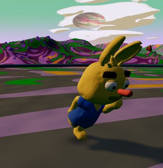
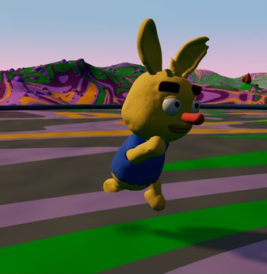
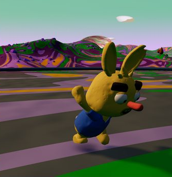
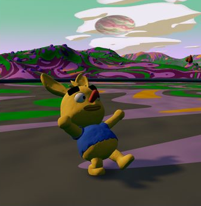

A · gleiche Tasten, jede Fortbewegung hat ihre Leiter
Schwung baut sich mit der Zeit auf. Laufen, Auto, Jetpack und Racer bedienen sich gleich.
LaufenJoggen→Sprint→Turbo→Roadrunner

Start

Turbo

Roadrunner

Bremse
AutoGas→Boost→Überboost
JetpackSchweben→schnell→Turbo-Schub
Racer-FlugSchub→Boost→Kessel voll
Shift halten Schwung wächst, die nächste Stufe kommt von selbst 2× Shift Kick: sofort eine Stufe höher, mit Start-Pose bzw. Düsen-Stoß loslassen Schwung fällt ab, aus Turbo mit Bremsen und Rutschen Ein gemeinsamer Vorrat (Puste/Kessel) für alle Kicks
B · eine Leiter über alle Fortbewegungen
Wie beim KayKit-Ersteller, nur weiter gedacht: Laufen, Fahren und Fliegen sind Stufen eines Bewegungsablaufs.
Gehen→Joggen→Sprint→Turbo→Roadrunner
StartTurboRoadrunner
→AbsprungJetpack zündet→Jetpack-Flug→SchwungflugGleiten mit Tempo
↘Landung→Rutschen / Bremse→Stand
Shift halten klettert die ganze Leiter hoch, bis in die Luft 2× Shift Kick zur nächsten Stufe loslassen die Leiter wieder hinunter, mit Landung und Bremse Auto bleibt eigener Einstieg (V), innen dieselbe Bedienung